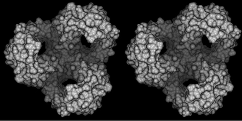
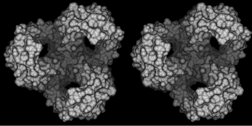

|
The camera is the viewport into the three dimensional scene. There are
quite a few settings for the camera, and only two things will be discussed here:
creating stereo pairs and changing the FOV angle.
Please refer to the POVray manual for a complete discussion on all camera
parameters.
These are the camera settings DINO writes into the .pov file (the
values may vary, especially the first translate statement).
camera {
perspective
location <0,0,0>
direction <0,0,-1>
up <0,1,0>
right <1,0,0>
angle 25.0000
translate <0,0,114.5000>
//translate <2.0,0,0>
//look_at <0,0,0>
}
Creating Stereo Pairs
The two final settings - which are commented out - are used to generate stereo
pairs. Uncomment them, and render the scene twice. Once with the x
value of the translate statement (the first number, 2.0) positive, a
second time with a negative sign. Then place them in a single image, next to
each other. Depending on the type of stereo picture you want, you have to choose
the correct left and right image:
|
+x |
-x |
| Cross-Eye Stereo |
left |
right |
| Parallel Stereo |
right |
left |
Having a decent depth-effect can considerably
improve the three dimensionality of the resulting stereo-pair!.

This is a cross-eye stereo pair generated with the default +/- 2.0 offset

This is a cross-eye stereo pair generated with a +/- 6.0 offset
FOV Angle
The field-of-view angle is a parameter for perspective viewing. The larger it
is, the faster the object size decreases with increasing distance from the
observer, as a result, more of the scene will be visible. Increasing the angle
can become important for close-ups: In the scenes below, the right image has
been rendered with an angle of 80.0. Much more of the surrounding area is
visible, although the objects tend to be distorted.
(c) 2001-2005 Ansgar Philippsen
| ){kind=link}
){kind=link}
){kind=link}
){kind=link}